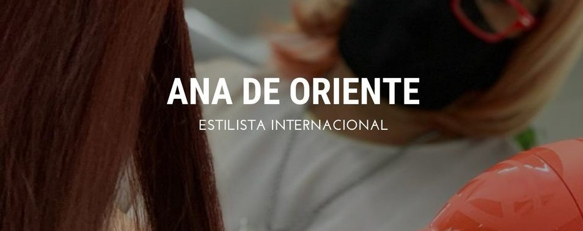
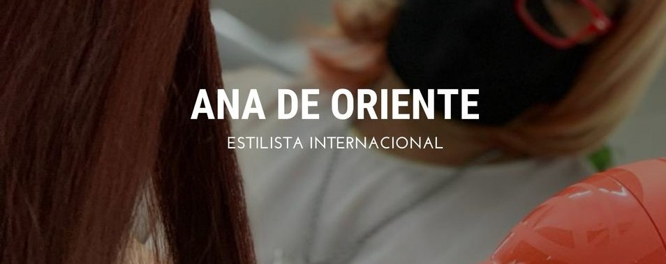
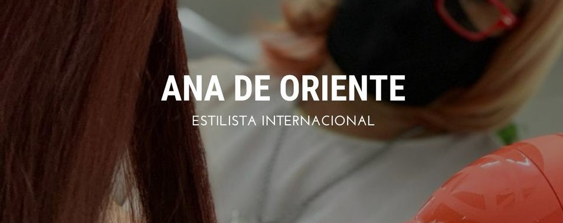
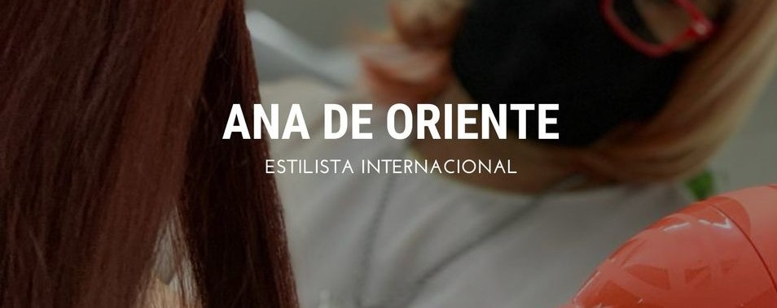

-Hace más de 40 años llegamos con mi familia desde Uruguay y hace la misma cantidad de años que elegí esta profesión. Siempre cuento que creo que la elegí por las caracterísiticas de mi pelo! Estudié en la academia Sudamericana con Julio Barbolla, que fue quien luego me llevó al club Social de Peinadores donde conocí a Rubén Senobi, Carlos Prat, Carlos Borda y Héctor Carrazone con quienes mantenemos amistad hasta el día de hoy.
-1996: comencé a capacitarme en la escuela "Pivot Point" ubicada en Ramos Mejía.
-1998: viajé a Chicago, EEUU para estudiar y formarme como educadora internacional, que fue el momento en el que descubrí lo que quería para mi vida: la docencia.
-Gracias a los conocimientos que fui adquiriendo se abrieron muchas puertas, una empresa internacional me contrató para viajar por el mundo. Tuve la oportunidad de conocer distintas culturas y recorrer distintos países.
-Actualidad: sigo capacitando a distintos grupos de estilistas en el país y el exterior. Soy embajadora de los productos Hairkadus en Argentina y de las herramientas de GammaPiu en Latinoamérica.